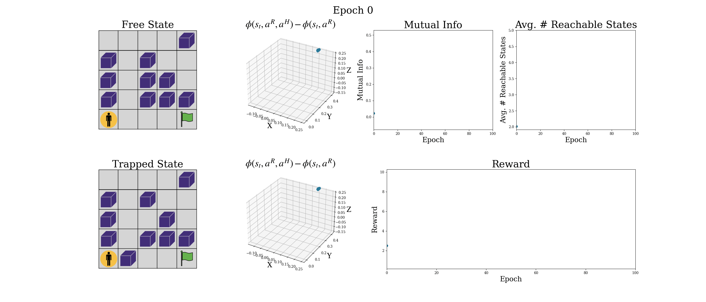
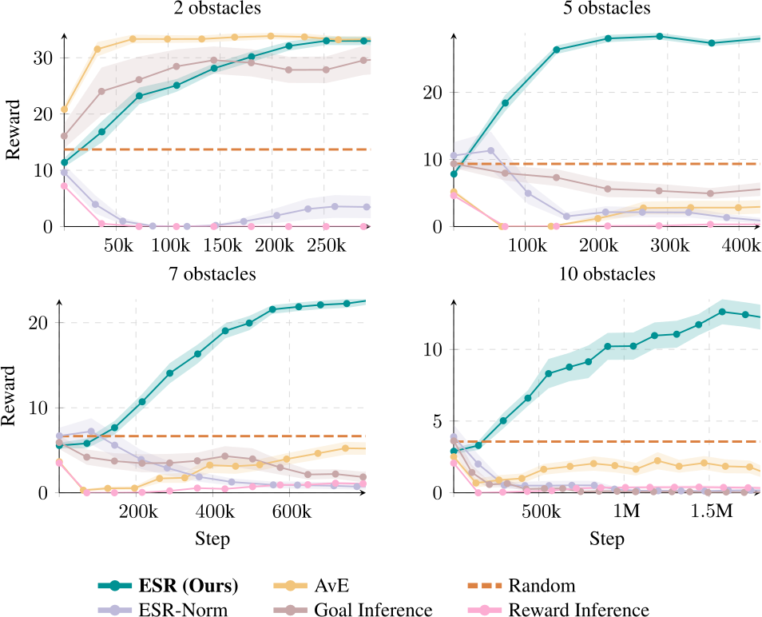
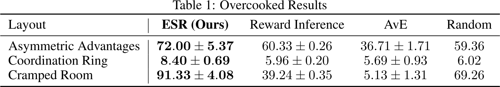

Abstract
Assistive agents should make humans' lives easier. Classically, such assistance is studied through the lens of inverse reinforcement learning, where an assistive agent (e.g., a chatbot, a robot) infers a human's intention and then selects actions to help the human reach that goal. This approach requires inferring intentions, which can be difficult in high-dimensional settings. We build upon prior work that studies assistance through the lens of empowerment: an assistive agent aims to maximize the influence of the human's actions such that they exert a greater control over the environmental outcomes and can solve tasks in fewer steps. We lift the major limitation of prior work in this area---scalability to high-dimensional settings---with contrastive successor representations. We formally prove that these representations estimate a similar notion of empowerment to that studied by prior work and provide a ready-made mechanism for optimizing it. Empirically, our proposed method outperforms prior methods on synthetic benchmarks, and scales to Overcooked, a cooperative game setting. Theoretically, our work connects ideas from information theory, neuroscience, and reinforcement learning, and charts a path for representations to play a critical role in solving assistive problems.
Our Method: Empowerment via Successor Representations
Our core contribution is a novel objective for training agents that are intrinsically motivated to assist humans without requiring a model of the human's reward function. Our objective, Empowerment via Successor Representations (ESR), maximizes the influence of the human's actions on the environment, and, unlike past approaches for assistance without reward inference, is based on a scalable model-free objective that can be derived from learned successor features that encode which states the human is likely to want to reach given their current action. Our objective empowers the human to reach the desired states, not all states, without assuming a human model.
Our method learns three representations:
- $\phi(s,\ar,\ah)$ -- This representation can be understood as a sort of latent-space model, predicting the future representation given the current state $s$ and the human's current action $\ah$ as well as the robot's current action $\ar$.
- $\phi'(s,\ar)$ -- This representation can be understood as an uncontrolled model, predicting the representation of a future state without reference to the current human action $\ah$. This representation is analogous to a value function.
- $\psi(s^+)$ -- This is a representation of a future state.
We then use these learned representations to compute the approximate empowerment reward:
$$r(s, \ar) = \bigl(\phi(s_t, \ar, \ah) - \phi(s_t, \ar)\bigr)^T \psi(g)$$which we use to train an assistive policy without estimating the human's reward.
Analyzing the Empowerment Objective
The key insight behind the ESR algorithm is that by maximizing a notion of human empowerment in the environment, we avoid needing to infer the human's objectives (or know them in advance).
(a) State marginal polytope
(b) Mutual information
(c) Maximizing empowerment
The Information Geometry of Empowerment. (Left) For a given state $s_t$ and assistant policy $\pir$, we plot the distribution over future states for 6 choices of the human policy $\pih$. In a 3-state MDP, we can represent each policy as a vector lying on the 2-dimensional probability simplex. We refer to the set of all possible state distributions as the state marginal polytope. (Center) Mutual information corresponds to the distance between the center of the polytope and the vertices that are maximally far away. (Right) Empowerment corresponds to maximizing the size of this polytope. For example, when an assistive agent moves an obstacle out of a human user's way, the human user can spend more time at desired state.
In the special case where the human is maximizing a family of reward functions for different skills, we show that empowerment enables optimal assistance.
Assumption 3.1 (Skill Coverage). The rewards $R \sim \mathcal{R}$ are uniformly distributed over the scaled $|\mathcal{S}|$-simplex $\Delta^{|\mathcal{S}|}$ such that: $$\bigl(R+\tfrac{1}{|\mathcal{S}|}\bigr)\bigl(\tfrac{1}{ 1-\gamma }\bigr) \sim \operatorname{Unif}\bigl( \Delta^{|\mathcal{S}|} \bigr) = \operatorname{Dirichlet}(\hspace{.5ex}\underbrace{\hspace{-.5ex}1,1,\ldots,1\hspace{-.5ex}}_{\text{$|\mathcal{S}|$ times}}\hspace{.5ex}). \label{eq:uniform}$$
Assumption 3.2 (Ergodicity). For some \(\pih, \pir\), we have $$ \operatorname{P}^{\pih,\pir}(\sfut = s \mid s_0) > 0 \quad \text{for all } s \in \mathcal{S}, \gamma \in (0,1). \label{eq:ergodic} $$
Our main theoretical result is Theorem 3.1, which shows that under these assumptions, maximizing empowerment yields a lower bound on the (squared) average-case reward achieved by the human for sufficiently large $\gamma$.Theorem 3.1. Under Assumption 3.1 and Assumption 3.2 for sufficiently large \(\gamma\) and any \(\beta>0\), $$ \mathcal{E}_{\gamma}(\pih,\pir)^{1/2} \le (\beta / e)\,\mathcal{J}_{\pi_{\mathbf{R}}}^\gamma(\pih). $$
Visualizing Training and the Learned Representations
Visualizing Training Empowerment in a 5x5 Gridworld with 10 obstacles. The human gets reward from reaching a goal square. The assistive agent can move the obstacles to open up a path to the goal. Our method learns to maximize the mutual information between the human's action and their future state conditioned on their current state. This corresponds to maximizing the volume of the state marginal polytope, which is proportional to the number of states that the human can reach from their current position. To visualize the representations, we set the latent dimension to 3 instead of 100.
Results
Our approach learns to assist a simulated human in a Gridworld environment augmented with varying numbers of obstacles, as well as the Overcooked benchmark.
 ${\bf B\kern-.05em{\small I\kern-.025em B}\kern-.08em T\kern-.1667em\lower.7ex\hbox{E}\kern-.125emX}$
@inproceedings{myers2024learninga,
title = {Learning to {{Assist Humans}} without {{Inferring Rewards}}},
booktitle = {{{ICML}} 2024 {{Workshop}} on {{Models}} of {{Human Feedback}} for {{AI Alignment}}},
author = {Myers, Vivek and Ellis, Evan and Eysenbach, Benjamin and Levine, Sergey and Dragan, Anca},
year = {2024},
month = jul,
}